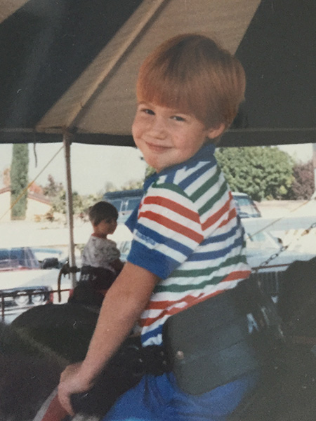
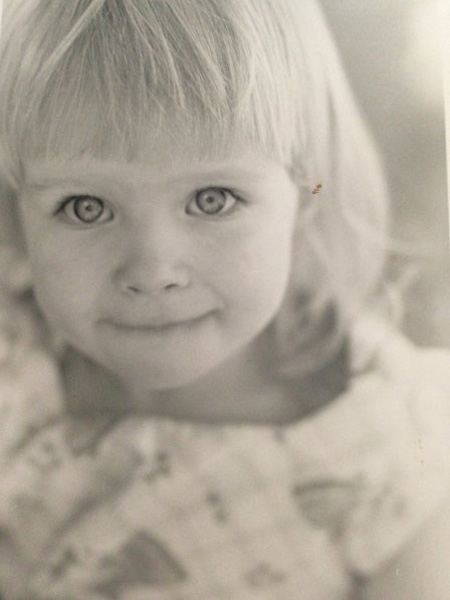

Our Story
1982

1988

2007
They meet in September of 2007 when working together at a beachfront restaurant in Huntington Beach, CA.
2009
They date briefly, then go their separate ways when Twila moves to Los Angeles to attend UCLA.
2012
Twila and Clayton reunite after years apart. It starts with dinner and a night out dancing. Since then they’ve been inseparable.
2013
They move to NYC! After a 3,500 mile drive across the country, Twila and Clayton start over with new jobs and a new apartment in the Big Apple.
2015
After two and a half years of hustling in the city, Twila and Clayton put everything in storage and become digital nomads.
They have been traveling the world ever since.
September 6, 2015
The Proposal
Clayton proposes on the The Pont Alexandre III bridge in Paris, France. This beautiful deck arch bridge spans the Seine River and gives a perfect view of the Eiffel Tower at sunset.